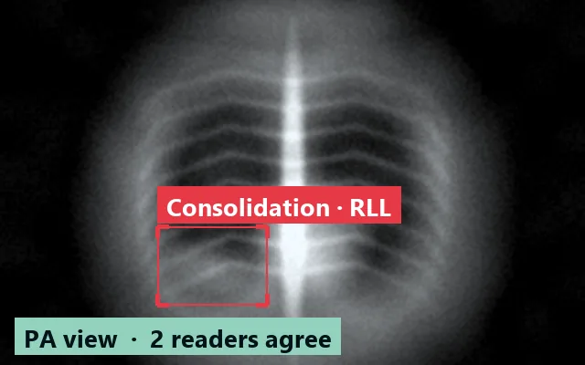
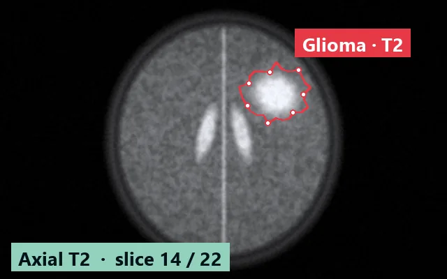
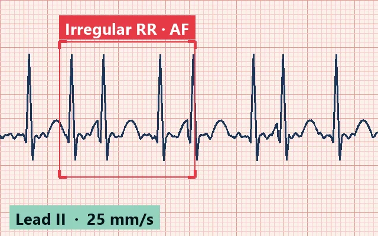
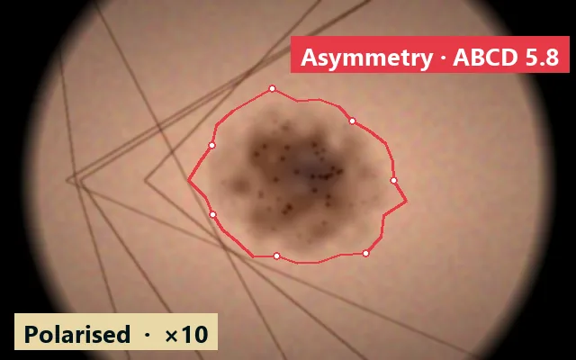
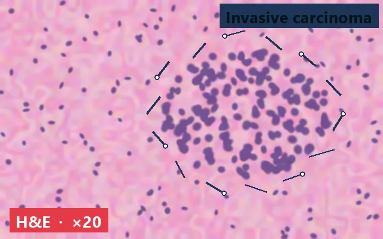
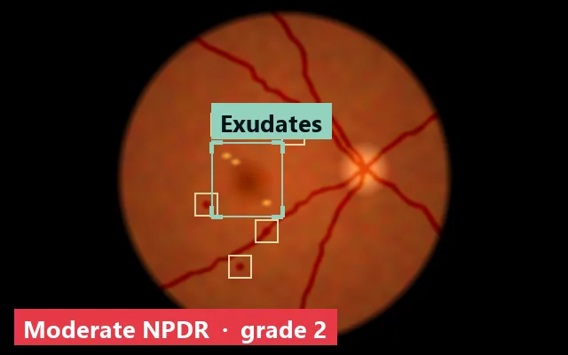
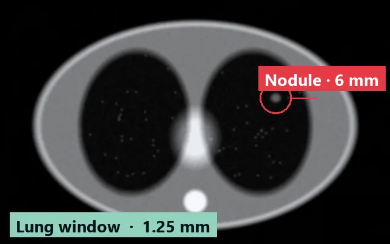
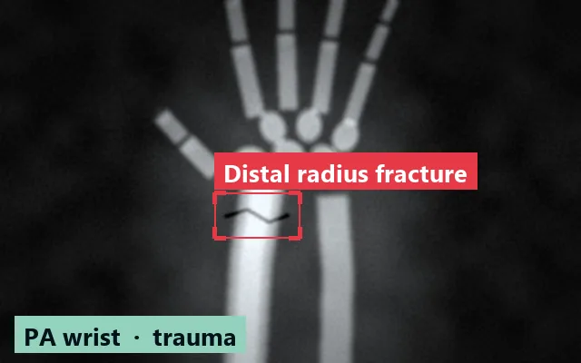

Project overview
Scans and recordings that doctors have donated to train models that spot disease early. Every file is stripped of patient details before it joins a dataset.
Summary
- 48,216 scans donated 1,312 this week
- 1,274 contributing doctors from 23 regions
- 63% labelled by two doctors target is 80% by spring
- 99.2% passed de-identification the rest await manual review
Datasets
-

Ready for trainingChest X-ray: pneumonia
Frontal views of adults. Two radiologists labelled every scan independently.
Open 12,480 scans -

Ready for trainingBrain MRI: tumours
T1 and T2 axial slices with tumour borders traced by neuroradiologists.
Open 6,920 slices -

CollectingECG: arrhythmias
Twelve-lead recordings with a cardiologist's report: atrial fibrillation, blocks, ectopic beats.
Open 9,305 recordings -

CollectingDermatoscopy: melanoma
Close-ups of skin lesions, paired with the biopsy result whenever one was taken.
Open 4,118 images -

In reviewHistology: breast cancer
Scanned H&E slides with tumour regions marked by pathologists.
Open 2,760 slides -

Ready for trainingRetina: diabetic retinopathy
Fundus photos graded on the international scale by ophthalmologists.
Open 5,640 photos -

CollectingLung CT: nodules
Full series with the position and size of every nodule larger than 3 mm.
Open 3,215 series -

In reviewBone X-ray: fractures
Hand and wrist films from trauma units with each fracture line marked.
Open 3,776 scans